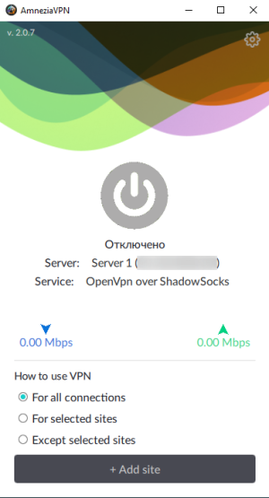
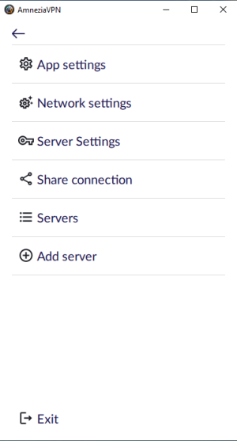
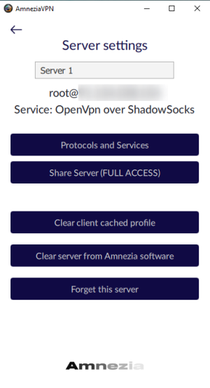
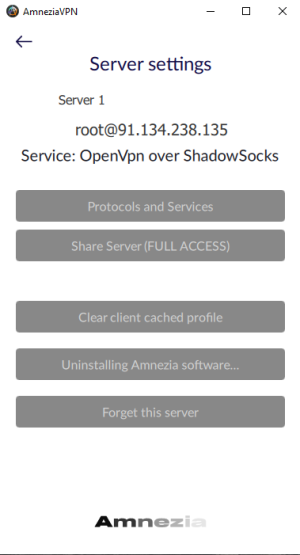
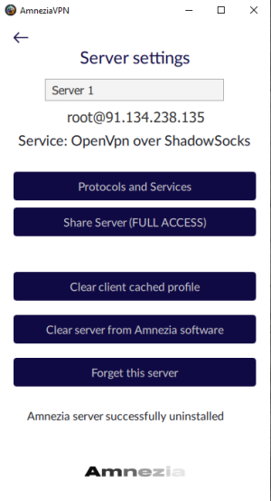

Удаление AmneziaVPN с сервера
РусскийRu

Шаг 1. Откройте настройки
Для этого нажмите на шестеренку в правом верхнем углу основного окна программы


Шаг 2. Откройте настройки сервера
Для этого нажмите на "Server settings"

Шаг 3. Удаление
Нажимаем на "Очистить сервер от ПО Amnezia" (Clean server from Amnezia software) - на время удаления у Вас посереют (станут неактивными) все кнопки.
После завершения процесса все кнопки снова станут активными, а внизу появится надпись "Сервер Амнезии успешно удален" (Amnezia server successfully uninstalled). Далее Вы можете пойти и поставить вручную, нажав кнопку "Протоколы и Сервисы" (Protocols and Services), либо забыть сервер в клиенте AmneziaVPN, нажав на кнопку "Забыть этот сервер" (Forget this server)
Примечание: чуть позднее здесь появится продолжение, в котором будет описано как убедиться что с сервера все удалено, и как все удалить самому, если вдруг что-то пошло не так


Готово!